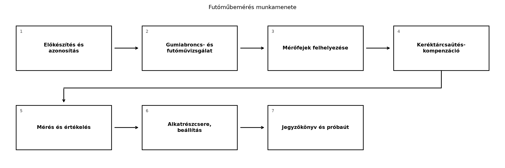

Az autó a szervizbe azzal a panasszal érkezik, hogy egyenes országúton is folyamatosan jobbra húz, a kormánykerék balra áll, és a jobb első gumiabroncs belső éle fűrészfogszerűen kopott. A tulajdonos először gumiabroncs-cserét kér, pedig a tünetek nagy valószínűséggel nem gumi-, hanem futómű-geometriai hibára utalnak. Ugyanezt a helyzetet látjuk akkor is, amikor egy kormánymű-, lengőkar- vagy lengéscsillapító-csere után a hibafelvevő munkalapra „futóműbemérés” kerül. Futóműbemérés nélkül a beállítás csak „szemre” történne, amivel a hibát a tünet szintjén kezelhetnénk, nem az ok szintjén. Ebben az alfejezetben a mérés vonatkozási rendszerétől a mérőműszereken át a mérési lap értelmezéséig haladunk.
Képzeljünk el egy futóműbemérő állomást. A jármű emelőpadon vagy mérőakna fölött áll. Az első kerekek forgatható, csúszó platformokon nyugszanak, hogy a kormányzás közben a kerék szabadon elfordulhasson; a hátsó kerekek görgőkön vagy csúszólapokon helyezkednek el. Mind a négy keréktárcsára rugós vagy vákuumos rögzítővel mérőfejet vagy mérőcélpontot szerelnek. A mérőfejek a kerék hosszirányához képest mérik a dőlésszögeket, a forgatás során felvett térbeli mozgásból pedig a kormányzási tengely jellemzők is kiszámíthatók. Az adatok vezetékmentesen vagy vezetéken a központi számítógépbe jutnak; a képernyőn a bal/jobb első és hátsó kerékértékek, valamint az eltérések színesen jelölt tűréssávjai láthatók. A szerelő nemcsak az értékeket, hanem azok egymáshoz viszonyított mintázatát is olvassa.
Definíció. Geometriai menetirány (thrust axis). A futóműbemérésnél az az irány, amely felé a jármű a hátsó kerekek beállítása szerint egyenesen haladni akar, ha az első kerekek nem kormányoznak. A geometriai menetirányt elsősorban a hátsó tengely oldalirányú beállítása határozza meg. Ha a hátsó tengely a jármű hossztengelyéhez képest ferde, a geometriai menetirány nem esik egybe a karosszéria hossztengelyével.
Definíció. Szimmetriatengely (vehicle centreline). A jármű hosszirányú középvonala, amelyet a gyártó a karosszéria, illetve a tengelyek geometriai középpontjai alapján rögzít. A futóműbemérő rendszer ezt a vonalat használja viszonyítási alapként a tengelyek hossz- és oldalirányú helyzetéhez.
Definíció. Tolószög (thrust angle). A szimmetriatengely és a geometriai menetirány közötti szög. Ha a hátsó tengely jobbra fordul el, a tolószög balra mutat, illetve fordítva. A tolószög az egyik leggyakoribb oka a kormánykerék ferde állásának egyenes menetben.
Definíció. Kerékelőfutás (setback). Az egyik tengely két kerekének hosszirányú eltérése egymáshoz képest. Ha például a bal első kerék hosszirányban 8 mm-rel előrébb van a jobb elsőnél, a jármű félrehúzhat, és a fékhatás is aszimmetrikussá válhat.
A korábbi Kormánygeometria és kerékállás-jellemzők alfejezetben már bevezetett paramétereket – kerékdőlés, csapterpesztés, utánfutás, legördülési sugár, kerékösszetartás – itt mérési, diagnosztikai szerepükben használjuk. A kerékösszetartást mérési lapon szögben és milliméterben is megadják. A kettő közötti átszámítás az összefüggéssel közelíthető, ahol a mérőperem átmérője, pedig a kerékösszetartási szög.
Szabály. A mm-ben megadott kerékösszetartás nem abszolút érték; ugyanaz a szögérték a nagyobb mérőperem-átmérőn nagyobb milliméter-értéket ad. Ezért a mérési lapon mindig a szögértéket és a gyártói tűrésmezőt kell együtt értelmezni.
Az (a) részábrán a hátsó tengely elfordulása miatt a geometriai menetirány (szaggatott) θ tolószöggel tér el a szimmetriatengelytől; az első tengelynél ez oldalirányú eltérést jelent (a kidolgozott példa adataival 14,1 mm). A (b) részábra a kerékelőfutást (a bal első kerék 8 mm-rel előrébb), a (c) egy kerék összetartási szögét és a mérőperemen mért távolságot mutatja (381 mm-es peremen ≈ 1,1 mm). A HTML-változatban θ, , δ és csúszkával állítható.
A futóműbemérés feladata nem csupán a kerekek párhuzamossá tétele, hanem annak ellenőrzése, hogy minden, az egyenesfutást és a kormányvisszatérést meghatározó jellemző a gyártó tűrésmezőjén belül van-e. A mérési eredményeket mindig a járműgyártó által megadott vonatkoztatási rendszerben kell értelmezni.
A műszeres mérés alapelve az, hogy a kerékre rögzített mérőfej a kerék térbeli helyzetét méri. A hagyományos, optikai vagy kontakt rendszereknél a mérőfejek közvetlenül a kormányzási tengely jellemzőinél használnak forgó idomokat; a modern, ipari 3D-s rendszereknél a keréktárcsán rögzített mérőcélpontokat kamerák figyelik. Amikor a szerelő a kormányt a mérési eljárás szerint elforgatja, a mérőcélpontok térbeli pályájából a rendszer kiszámítja a csapterpesztést és az utánfutást is, hasonlóan ahhoz, ahogy ezeket a paramétereket a Kormánygeometria és kerékállás-jellemzők alfejezetben definiáltuk.
A mérőfejek felfogatása a keréktárcsa pereméhez illeszkedő adapterrel történik. A fejeket úgy kell rögzíteni, hogy a tárcsa középsíkjához viszonyított helyzetük ismert legyen. A felhelyezés előtt a felfekvő felületeket meg kell tisztítani, mert a peremre tapadt szennyeződés vagy korrózió hamis szögeltérést okoz. A keréktárcsa maga nem tökéletes sík; ezért minden mérés előtt szükséges a keréktárcsaütés-kompenzáció. Ennek során a kereket felemelve vagy a mérőplatform segítségével elforgatva a rendszer megméri a tárcsa ütését, és ezt a hibát levonja a mért kerékszögekből. Ha a tárcsa deformációja túl nagy, a kompenzálás nem segít, és a tárcsát ki kell cserélni. Az eljárást a gyártó mérőberendezésre vonatkozó utasítása szerint kell végrehajtani.
A méréshez a járművet elő kell készíteni. A gumiabroncsnyomást hideg abroncson, a gyártó címkéjén megadott értékre kell beállítani; a kerekek méretét, DOT-adatait és a futófelület állapotát a Kerekek és gumiabroncsok alfejezetben tanultak szerint ellenőrizni kell. Ha a két oldalon eltérő a futófelület-mintázat vagy jelentősen eltér a kopás, a mérési lap meghamisíthatja a geometriai következtetéseket. A kormányt középállásba kell hozni; a rögzítőféket a mérőberendezés utasítása szerint kell kezelni, a kormánykitéréses (utánfutás-, csapterpesztés-) méréshez pedig a fékpedált fékpedál-rögzítővel lenyomva kell tartani (ellenőrizendő: mérőberendezés-utasítás). A járműnek a gyártó által előírt terhelési állapotban kell lennie (például üres, fél tank vagy vezető tömegét szimuláló ballaszt). A pontos előírást a gyártói adatbázis tartalmazza; ettől eltérni csak indokolt, dokumentált módon szabad.
A mérési jegyzőkönyv tipikus sorai: bal/jobb első kerékdőlés, bal/jobb első kerékösszetartás, teljes első összetartás, bal/jobb utánfutás, bal/jobb csapterpesztés, bal/jobb hátsó kerékdőlés, bal/jobb hátsó kerékösszetartás, tolószög, kerékelőfutás, valamint a gyártói gyorsjegyzékben szereplő egyéb tengelyhelyzet-értékek. A mérési lapon az eltéréseket a szoftver pirossal jelöli, a beállítható és nem beállítható paramétereket általában külön csoportba sorolja.
A leggyakoribb tengelyhelyzet-hibák és jellemzőik a következő táblázatban foglalhatók össze.
| Mért paraméter (mértékegység) | Mit mutat | Szemléltető tűrésmező | Eltérés tipikus tünete | Gyakori ok |
|---|---|---|---|---|
| Hátsó tolószög (°) | hátsó tengely iránya a szimmetriatengelyhez képest | kormány ferde, félrehúzás | elhajlott hátsó futóműkar, sérült szilent | |
| Első kerékdőlés (°) | kerék dőlése függőlegeshez képest | belső/külső éles abroncskopás, félrehúzás | elgörbült lengőkar, törött rugó | |
| Első utánfutás (°) | kormány visszatérítő nyomaték | rossz visszatérés, iránytartási zavar | elhajlott toronylemez, ütközéses sérülés | |
| Első kerékösszetartás (°, mm) | kormányzott kerekek párhuzamossági hibája | fűrészfog-kopás, ideges kormányzás | rossz beállítás, kopott vonórúdvég | |
| Kerékelőfutás (mm) | azonos tengely kerekeinek hosszirányú eltérése | félrehúzás, aszimmetrikus fékhatás | sérült felfüggesztés, karosszéria-deformáció |
Az értékek tanulási példák (ellenőrizendő: gyártói adat / hatályos előírás).
A beállítást mindig a mérési eredmények és a szemrevételezés együttese alapján kell megtervezni. Ha például a jobb első kerékdőlés jelentősen eltér, de a bal első kerékdőlés jó, akkor először a jobb oldali lengőkar, szilent, gömbcsukló és rugó állapotát kell ellenőrizni. Az utánállítás ugyanis a sérült alkatrész cseréje nélkül nem tartja meg a beállított értéket; ezt a munkafolyamatot a Futómű és kormány szerelése: kerékcsapágy, szilent, gömbcsukló, rugó, lengéscsillapító, kormánymű alfejezetben részletesen tárgyaljuk.
Az ADAS-kalibrálás kapcsolata a futóműbeméréshez akkor lép fel, ha a beállítás, a futóműalkatrész-csere vagy a kormányszög-érzékelő nullpontjának változása megváltoztatja a jármű egyenesfutási jellemzőit. Ilyenkor a gyártó gyakran előírja az elülső kamera, a radar, illetve a kormányszög-érzékelő kalibrálását is, mert a vezetőtámogató rendszer a jármű geometriájára vonatkoztatva dönt. A kalibrálás részleteit a Vezetőtámogató rendszerek és kalibrálásuk alfejezetben tárgyaljuk; itt elég annyi, hogy a futóműbemérési jegyzőkönyv és a jármű tényleges geometriai szimmetriája bemenő adat az ADAS-kalibráláshoz.
A mérési folyamatot áttekintő lépéssor:

Az ábra nélkül is követhető: a jármű előkészítése után a mérőfejeket fel kell helyezni, a tárcsaütést kompenzálni kell, a mérést el kell végezni, majd a hibás alkatrészek cseréje és a beállítás után a járművet újra mérni kell, végül a munkát jegyzőkönyvvel és próbaúttal zárjuk.
Példa. Kerékösszetartás átszámítása. Adott egy futóműbemérési jegyzőkönyv, amelyen a gyártói megadott teljes első kerékösszetartás , a mérőperem-átmérő . Számítsa át a szögértéket milliméterre a mérőperemnél.
Megoldás.
Tehát a gyártói összetartás ezen a mérőperemen körülbelül
.
Ugyanezt a szöget nagyobb, 406 mm-es mérőperemre átszámítva
adódna; ezért a mm-értéket önmagában nem használjuk. ∎
Példa. Tolószög hatása az első tengelynél. Egy jármű mérési lapján a tolószög , a tengelytáv . Kérdés, mekkora oldalirányú eltérést mutat az első tengely magasságában a geometriai menetirány a szimmetriatengelyhez képest.
Megoldás.
Az oldalirányú eltérés közelítőleg:
A geometriai menetirány tehát az első tengely magasságában kb. 14 mm-rel
tér el a szimmetriatengelytől; a jármű enyhén ferdén halad, ezért
egyenes menetben a kormányt el kell fordítani. Ez jól magyarázza a ferde
kormányállást: az első kerekeket a geometriai menetirányhoz kell
igazítani, miközben a vezető a karosszéria hossztengelyét próbálja az
úthoz tartani. ∎
A futóműbemérés minőségellenőrzése akkor megbízható, ha a következőket ellenőriztük:
Előírás. A futóműbemérés mérendő és beállítandó értékeit a járműgyártó adatbázisa határozza meg. A beállítás csak a gyártói tűrésmezőkön belül tekinthető megfelelőnek. A mérőberendezést a gyártó utasítása szerint kell kalibrálni, és a mérési munkalapot a járműadatokkal, a mért értékekkel és az elvégzett javításokkal együtt meg kell őrizni (ellenőrizendő: aktuális gyártói adat).
Valós eset. Egy középkategóriás személyautó balra húz, a kormánykerék pedig egyenes menethez semleges helyett 5–10 fokkal jobbra áll. Az ügyfél szerint a gumiabroncsok újak, ezért „nem lehet abroncshiba”.
A futóműbemérés során a tolószög , az első kerékösszetartás bal oldalon , jobb oldalon , a jobb első kerékdőlés pedig a gyártó tűrésével szemben (ellenőrizendő gyártói érték). A szerelő nem azonnal állít, hanem szemrevételezni kezd. A jobb első lengőkar alsó szilent gumija kilépett, a lengőkar enyhén elhajlott, a jobb hátsó keréknél pedig a kerékcsapágyban enyhe holtjáték érezhető.
A diagnosztikai lánc a következő:
A következő munkalap a futóműbemérés előkészítését és a mérési folyamatot szemlélteti tanműhelyi környezetben.
Cél: a kerékbeállítási és tengelyhelyzet-értékek mérése, kiértékelése, majd a szükséges beállítás és ellenőrzés elvégzése.
Jármű- és adatazonosítás: rendszám, alvázszám, típus, motorszerkezet, felszereltségi kód, gyártói mérési adatbázis-verzió, futómű- és gumiméret. Az adatokat a munkalapon rögzíteni kell.
Szükséges szerszámok és mérőeszközök: futóműbemérő mérőplatform, mérőfejek/adapterek, nyomatékkulcs, kézi nyomásmérő, fékpedál-rögzítő, kormányrögzítő, emelő és bakok, tolómérő vagy hézagmérő a szemrevételezéshez, diagnosztikai rendszerteszter az ESP- és kormányszög-érzékelő ellenőrzéséhez, ADAS-kalibráló eszközök, ha a gyártó előírja.
Anyagok: megfelelő rögzítőelemek a gyártói előírás szerint (ahol a gyártó kéri, új csavaranyagok), tisztító- és zsírtalanító anyagok.
Biztonsági korlát. A feladat tanműhelyi környezetre, oktató felügyeletére és a gyártói javítási utasítás betartására vonatkozik; a megadott értékek tanulási példák.
Figyelem. Csak kocsiemelővel tartott jármű alá bemenni tilos; az alváz alatti munkát a gyártói emelési pontokon elhelyezett bakokkal kell megtámasztani. A mérőplatform mozgó részei között a kéz beszorulása ellen kesztyűt és odafigyelést igényel; a kerekek elforgatásakor a mérőfejeket és a kezet a tárcsaperemtől távol kell tartani.
A képsor a 9. munkalépés beállítási fogását mutatja: (1) a kormánykerék vízszintes középhelyzetben rögzítve; (2) a külső gömbfej ellenanyáját két kulccsal lazítjuk (az egyik a gömbfejet tartja), a gumiharang külső bilincsét oldjuk; (3) a kormányösszekötőt a laposainál forgatjuk, a kijelzőt figyelve, a gyártói tűrésmezőbe; (4) az ellenanyát nyomatékkulccsal meghúzzuk (gyártói adat), a bilincset visszahelyezzük, ellenőrző mérést végzünk. Ha csak az egyik oldalon állítunk, a kormánykerék egyenes menetben ferdén áll.
Munkalépések:
Dokumentálás: munkalap, futóműbemérési jegyzőkönyv, szervizkönyv, a diagnosztikai tesztkészülék mentett adatai.
Az ábrán a vízszintesre állított mérőplatformon (1) az első kerekek forgótányéron (2), a hátsók csúszólemezen (3) állnak, így beállításkor a kerék feszültség nélkül mozdulhat; a kerékbefogókon (4) lévő célpontokat a kamerás oszlop (5) figyeli; a kormánykerék-rögzítő (6) középállásban tartja a kormányt, a fékpedál-rögzítő (7) a kerekek elgurulását gátolja; a számítógép (8) a gyártói értékeket adja. A (c) betét a keréktárcsaütés-kompenzációt mutatja: a kereket a jelzett helyzetekbe forgatjuk és rögzítjük. A HTML-változatban az elemekre mutatva a nevük és a munkalépés jelenik meg.
Eljárás. A mérőrendszeren végrehajtott kompenzáció és mérés lépései:
Hiba. Csak mm-ben ellenőrzött kerékösszetartás. A szerelő a gyártói adatban megadott mm-értéket használja annak ismerete nélkül, hogy az melyik mérőperem-átmérőre vonatkozik. Így hibás beállítást kaphat. A helyes gyakorlat: a szögértéket is ellenőrizni, és a mérőrendszer által megadott átmérő szerint dolgozni.
Hiba. Kopott alkatrész felett beállítás. Ha a lengőkar vagy a szilent holtjátéka miatt a kerékdőlés mérési értéke nem állandó, a futóműbemérő padon beállított érték terhelés alatt eláll. Ezért először a holtjátékot és az alkatrészek állapotát, majd magát a beállítást kell elvégezni.
Hiba. A keréktárcsaütés-kompenzáció kihagyása. A deformált tárcsa vagy a szennyezett felfekvés hamis kerékdőlési, illetve összetartási hibát mutathat; a szerelő ilyenkor olyan alkatrészt cserél, amely nem hibás. A kompenzálási lépést minden mérés előtt végre kell hajtani.
Hiba. Azonos oldalra húzó panasz vizsgálata a tolószög kiolvasása nélkül. A szerelő csak az első kerékösszetartást ellenőrzi, pedig a ferde kormányt gyakran a hátsó tengely tolószöge okozza. A mérési lap minden tengelyhelyzet-értékét egyszerre kell értékelni.
Igaz vagy hamis? A kerékösszetartás mm-ben megadott értéke független a mérőperem átmérőjétől. Válasz: hamis; indoklás: .
Mit jelent a tolószög?
Válasz: a szimmetriatengely és a geometriai menetirány közötti
szög.
Mennyi a kerékösszetartás mm-ben, ha
és
?
Válasz:
.
A mérési lapon a jobb első kerékdőlés
,
a bal első kerékdőlés
.
Melyik abroncs belső vagy külső éle kopik valószínűleg?
Válasz: a jobb első kerék túl negatív dőlése miatt a belső éle kopik
jellemzően, ha a vezető nem ellenkompenzál.
Miért kell a keréktárcsaütés-kompenzáció?
Válasz: mert a tárcsa nem tökéletes sík, és az ütése hamis szögértéket
adna.
Mikor kell ADAS-kalibrálás a futóműbemérés után?
Válasz: ha a jármű gyártója előírja, jellemzően olyan beállítás vagy
alkatrészcsere után, amely az egyenesfutást vagy a kormányszög-érzékelő
nullpontját befolyásolja.
1. feladat (A). Határozza meg a geometriai menetirány és a szimmetriatengely különbségét, és nevezze meg a köztük lévő szög nevét.
2. feladat (A). Adott mérőperem-átmérő és kerékösszetartási szög. Számítsa ki a mm-ben kifejezett kerékösszetartást két tizedesjegyre.
3. feladat (B). Egy mérési lap szerint a hátsó tolószög , az első kerékösszetartás bal oldalon , jobb oldalon . A gumiabroncsok nyomása megfelelő, a futóműalkatrészek szemrevételezése nem mutat holtjátékot. Mi a legvalószínűbb tünet próbaúton, és miért?
4. feladat (B). Rakja sorrendbe a következő munkalépéseket, és indokolja a helyes sorrendet: a) mérőfejek felhelyezése, b) gumiabroncsnyomás ellenőrzése, c) keréktárcsaütés-kompenzáció, d) futómű-jegyzőkönyv kinyomtatása, e) kormány középállásba állítása, f) hiba- és holtjáték-szemrevételezés.
5. feladat (C). Egy jármű tengelytávja , a mért tolószög . Mekkora oldalirányú eltérést mutat az első tengely magasságában a geometriai menetirány a szimmetriatengelytől? Értelmezze, miért okozhat ez ferde kormányállást egyenes menetben.
6. feladat (D). Egy ügyfélautó balra húz, a kormány jobbra áll, és a bal első abroncs külső éle gyorsabban kopik. A mérési lap szerint a bal első kerékdőlés , a jobb első kerékdőlés , az első kerékösszetartás mindkét oldalon , a hátsó tolószög . Milyen vizsgálatot végezzen a szerelő a beállítás előtt? Adja meg a legvalószínűbb alkatrész-okot és a javítási sorrendet.
Önellenőrzés – válaszok
1. feladat megoldása. A geometriai menetirány a hátsó kerékbeállítás szerint kijelölt tényleges egyenes haladási irány, a szimmetriatengely a jármű hosszirányú középvonala. A köztük lévő szög a tolószög.
2. feladat megoldása.
.
3. feladat megoldása. A tolószög a hátsó tengely ferdeségét mutatja; az első kerékösszetartás szimmetrikus, tehát a jármű a geometriai menetirányhoz igazodva ferdén halad, a kormánykerék elfordítva áll. A legvalószínűbb tünet: egyenes menethez elfordított kormánykerék; folyamatos oldalirányú húzás tiszta tolószöghibánál nem lép fel.
4. feladat megoldása. Helyes sorrend: b) gumiabroncsnyomás ellenőrzése, f) hiba- és holtjáték-szemrevételezés, e) kormány középállásba állítása, a) mérőfejek felhelyezése, c) keréktárcsaütés-kompenzáció, d) futómű-jegyzőkönyv kinyomtatása. Indoklás: először a jármű előkészítése és a biztonsági/hibás állapotok felmérése, majd a mérőeszközök rögzítése és kompenzálása, végül a mérési eredmény dokumentálása.
5. feladat megoldása.
.
A geometriai menetirány az első tengely magasságában csaknem 1 cm-rel
tér el a szimmetriatengelytől; a jármű enyhén ferdén halad, ezért
egyenes menetben a kormányt el kell fordítani, ami a kormánykerék ferde
állásaként jelenik meg.
6. feladat megoldása. A mérési lap szerint a bal első kerékdőlés pozitív, tehát a bal első kerék teteje kifelé dől; ez okozhat külső éles abroncskopást. A beállítás előtt meg kell vizsgálni a bal első felfüggesztést: alsó/felső lengőkar, szilent, gömbcsukló, rugó, csapágy, és meg kell nézni, van-e ütközésnyom. A kerékdőlés-különbség ( a bal, a jobb oldalon, a különbség ) a pozitívabb dőlésű bal oldal felé húzza a járművet, ezért a panasz iránya (balra húz) összhangban van a mért értékekkel. A legvalószínűbb ok a bal első felfüggesztési alkatrész elhajlása vagy a felső torony/fészek sérülése. Javítási sorrend: a sérült alkatrész cseréje, majd futóműbemérés, kerékdőlés és összetartás beállítása, végül próbaút. Ha a gyártó előírja, ADAS-kalibrálás is szükséges.
A futóműbemérés a jármű egyenesfutási és kormányzási jellemzőit meghatározó geometriai értékek mérése és beállítása. A viszonyítási rendszer alapja a szimmetriatengely és a geometriai menetirány; a kettő közötti szög a tolószög. A mért paraméterek – kerékdőlés, csapterpesztés, utánfutás, kerékösszetartás, kerékelőfutás – eltérései a gumikopás, félrehúzás és kormányferdeség mellett gyakran konkrét futóműalkatrészek sérülésére utalnak. A modernebb 3D-s mérőrendszerek a mérőfejek és kamerák alkalmazásával a kormányzási tengely jellemzőit is kiszámítják; a mérés előtti keréktárcsaütés-kompenzáció nélkül a mért szögértékek félrevezethetők. A kerékösszetartás mm-ben kifejezett értéke mindig a mérőperem-átmérőhöz kötött: . A mérési munka csak akkor megbízható, ha a jármű előkészítése, a mérőfejek elhelyezése, a hibás alkatrészek felismerése és cseréje, majd a beállítás utáni újramérés és próbaút is megtörténik. Továbbvitt eredmény. A futóműbemérés során felismert mérési eltérések és a hibatünetek összekapcsolása a Futómű és kormány szerelése: kerékcsapágy, szilent, gömbcsukló, rugó, lengéscsillapító, kormánymű alfejezetben a konkrét alkatrészcsere és beállítási sorrend megválasztásához ad alapot; a mérési előkészítés szabályait a Kerekek és gumiabroncsok alfejezetben tanult abroncsméretekkel és nyomásokkal együtt kell alkalmazni.
A futóműbemérés műszaki alapjai a járműmechanika és a méréstechnika stabil tudásanyagából származnak. A gyártói beállítási értékek, tűrésmezők, valamint a mérőrendszerre vonatkozó kalibrálási és kompenzálási utasítások járművenként és mérőberendezés-típusonként eltérnek; ezeket mindig az aktuális gyártói javítási adatbázis alapján kell meghatározni. Az ADAS-kalibrálási kötelezettség körét a járműgyártó javítási utasítása rögzíti. A hatósági műszaki vizsgálat keretében esetlegesen használt futómű-ellenőrzési határértékeket és vizsgálati módszereket a hatályos hazai előírásokhoz igazítva kell ellenőrizni. A fejezetben szereplő számszerű tűrésmezők, mérési példák, nyomatékok és beállítási értékek tanulási példák, ezért a gyakorlati felhasználás előtt ellenőrizendők: gyártói adat, műszerkönyvi előírás, hatályos jogszabály.